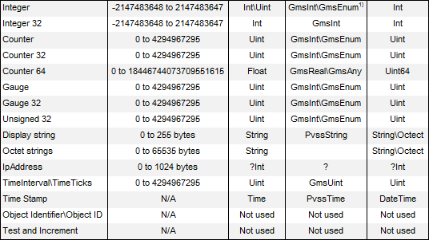

SNMP Data Types Relationship
The following table describes the data types relationship. In particular, it includes:
- SNMP Data Typesused and tested with the current version of Desigo CC.
- Min and Max values (size) that each Data Type can take (where applicable).
- Data Types syntax to use when creating the CSV import files (for the SNMP object model).
- Data Types that can be used in the SNMP object model. The types available in Desigo CC are strictly depending on the Data Types defined in the CSV import file.
- Data Types to use in Desigo CC when configuring the SNMP device.
SNMP Data Types | Size | Syntax to use in CSV import file | InDesigo CCObject Model | InDesigo CCSNMP device |
 | ||||
1) | Since the Integer data type is often used to enumerate values within the context of a single object, it can be combined with either the GmsInt (if numeric values are used) or GmsEnum data types (if textual conditions must be represented based on numeric values). |